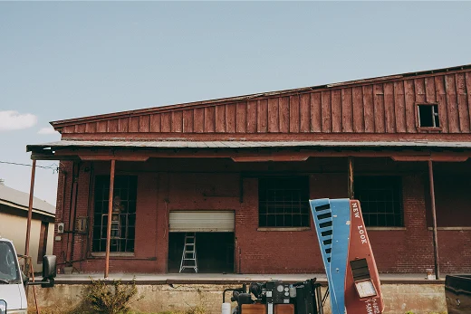
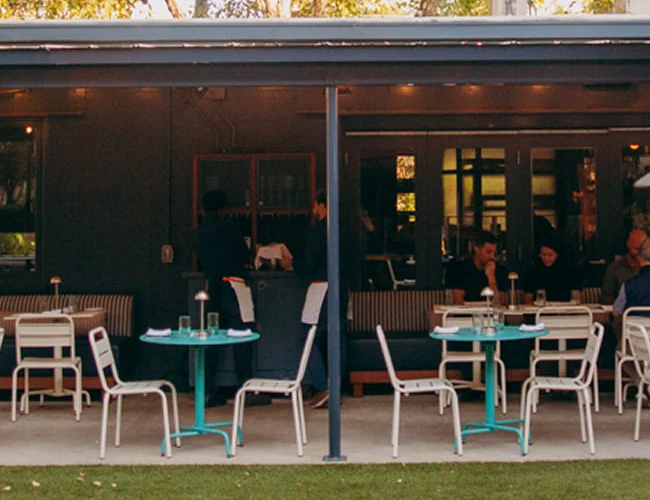
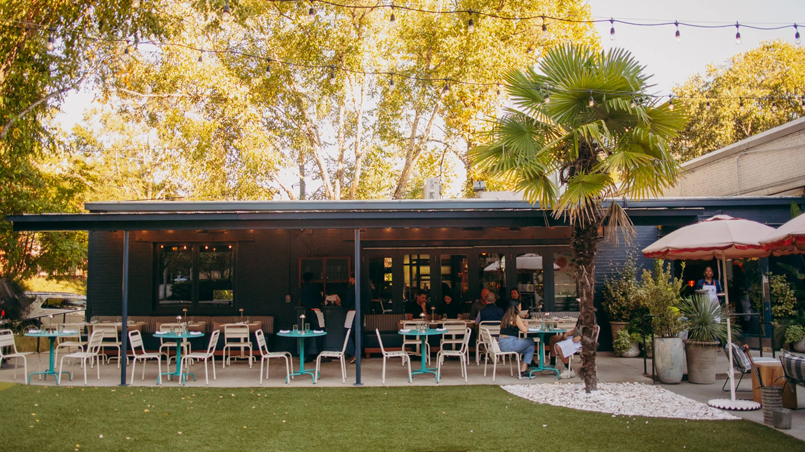
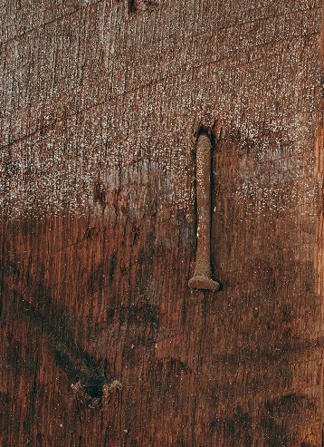
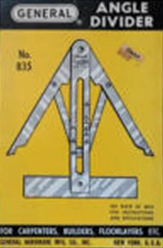
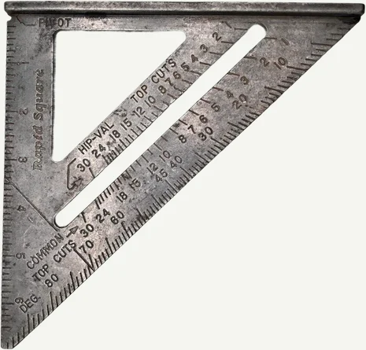
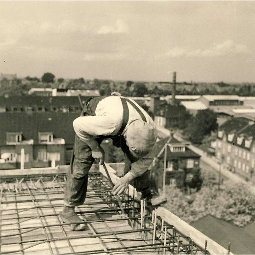

01
Capture date unrecorded
From the field
Ladders beside the brick openings.
Freeman image archiveCapture date unrecorded

Observations from the work.
Ladders beside the brick openings.
Freeman image archive


Steel posts support the terrace canopy.

Recessed metal pull in worn timber.
Material referenceFour stages from
the same viewpoint.
Illustrative study · AI-generated images, not documented Freeman construction.


Angle divider and layout square.
Archive references; not a project-specific drawing or tool record.

Worker at the reinforcing steel.
Historical reference from Freeman’s archive.